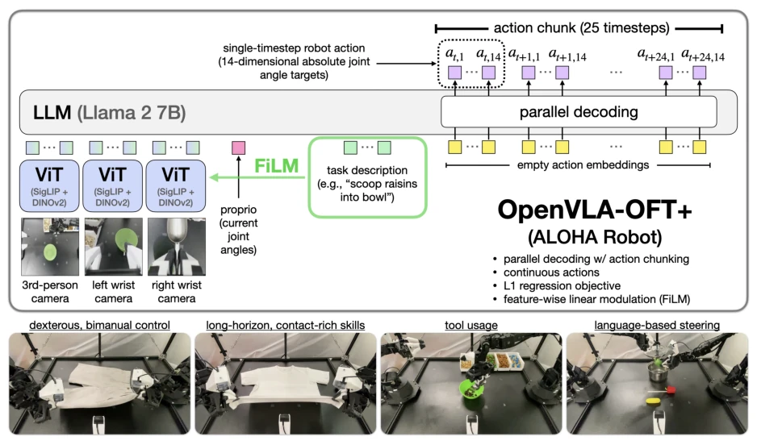
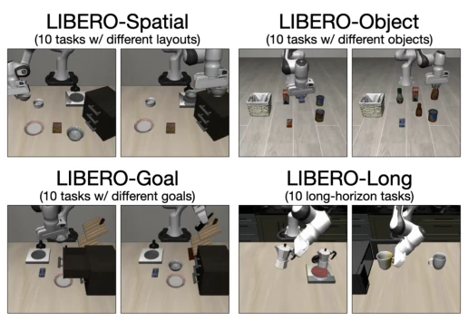
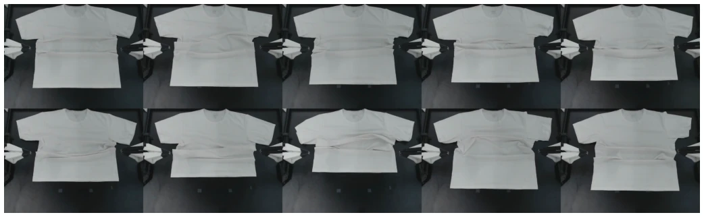
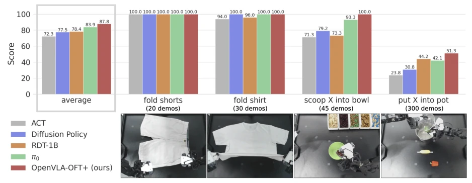
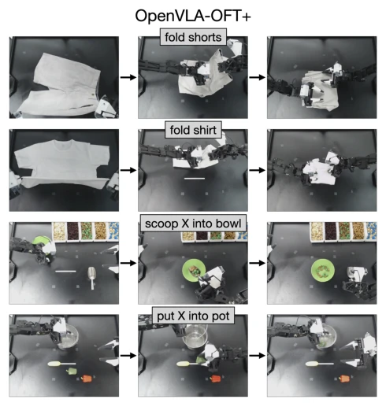
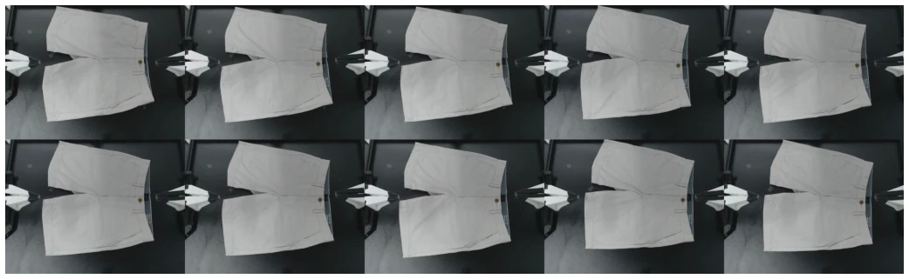
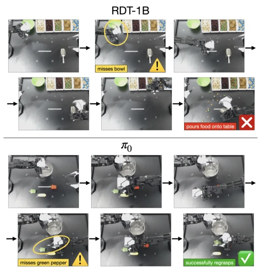
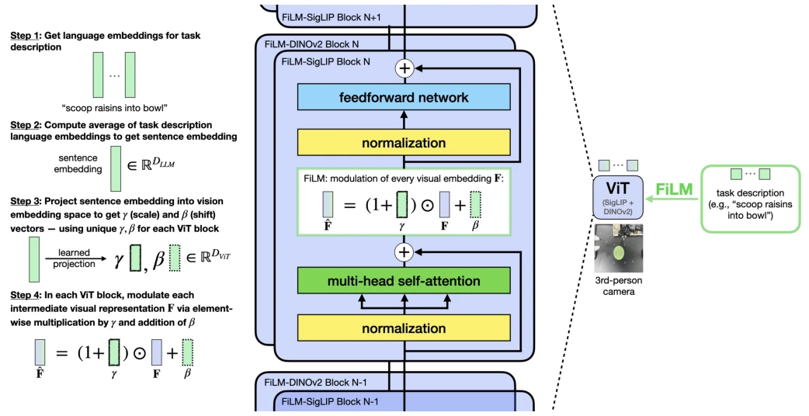
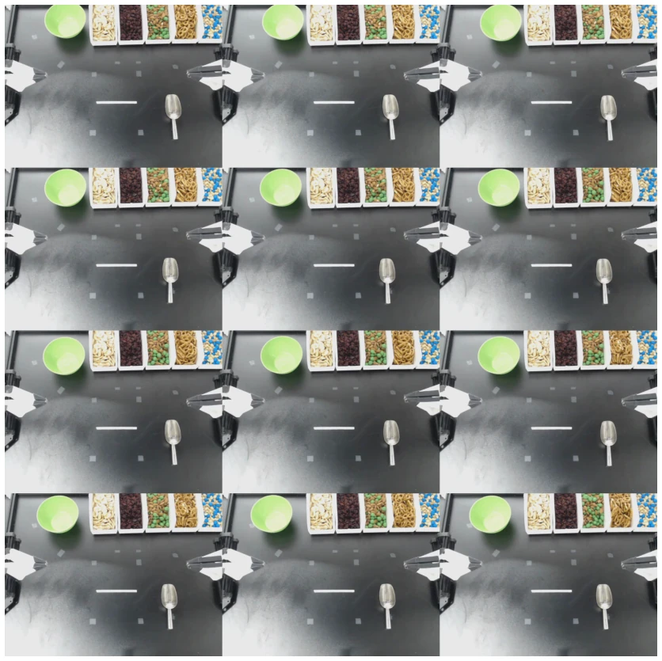
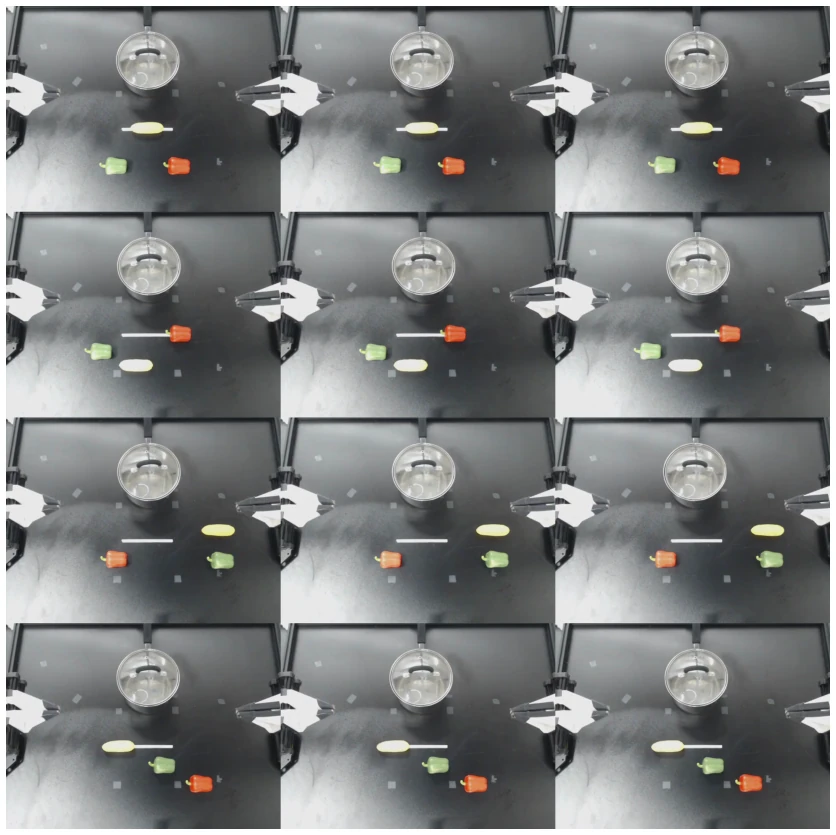

This paper resembles a manifesto of a "parameter tuning expert," informing everyone not to constantly seek to invent new architectures; properly tuning existing VLAs can also significantly outperform others. Although OpenVLA is powerful, its default fine-tuning is too slow and lacks sufficient accuracy. The authors directly employ "three core strategies": parallel decoding, continuous actions, and L1 regression. The results show a 97.1% success rate in LIBERO simulation, with speed increased by 26 times. However, this approach relies heavily on the foundation model; if the base model is inadequate, fine-tuning cannot rescue it. Furthermore, tricks like FiLM only manifest effectiveness under multi-view settings; single-view might be somewhat redundant. Overall, this represents a victory of "pragmatism," but do not expect it to solve all generalization problems, as it is still fine-tuned based on specific datasets and remains dependent on pre-trained representations.
Existing VLAs (e.g., OpenVLA [23]) have unclear fine-tuning strategies when deployed to new robots. Default autoregressive generation is too slow (3-5Hz), failing to meet the demands of high-frequency control (25-50Hz). LoRA [23] performs poorly on dual-arm tasks. Although FAST [38] increases speed, it still suffers from latency. There is a need for a method that ensures both speed and improved task success rates. Existing work mostly focuses on model architectures, lacking empirical analysis on fine-tuning strategies, leading practitioners to blindly follow pre-trained recipes and fail to adapt to new robot setups.

Fig. 1: OpenVLA-OFT+ on the bimanual ALOHA robot. Our Optimized Fine-Tuning (OFT) recipe enhances fine-tuned OpenVLA policies through improved inference efficiency, model quality, and input-output flexibility. The resulting OpenVLA-OFT+ policies execute diverse dexterous manipulation tasks on a real-world bimanual robot at high control frequencies (25 Hz). The “+” suffix indicates the integration of feature-wise linear modulation (FiLM) [37], which strengthens language grounding in tasks where accurate language understanding is critical for success.

Fig. 3: LIBERO simulation benchmark [26] task suites. We study VLA fine-tuning design decisions using four representative task suites. Here we depict two of ten tasks per suite.
Overall based on the OpenVLA backbone, employing LoRA fine-tuning. There are three core innovations: 1. Parallel decoding + Action Chunking: changing causal attention to bidirectional, generating multiple time-step actions at once, greatly reducing latency. 2. Continuous action representation: abandoning discrete tokens, using MLP to directly regress continuous values, improving accuracy. 3. L1 regression target: converging faster than diffusion models, with comparable effects. Addressing the ALOHA multi-view problem, FiLM [37] is introduced to enhance language grounding and prevent visual spurious correlations. Input and output are more flexible, supporting multi-camera and state inputs.

Fig. 10: Initial states for “fold shirt” task evaluations. The bottom edge of the shirt varies by 15 cm along the tabletop’s vertical axis across different trials.
Tested on LIBERO simulation and ALOHA real robots. Baselines include π0 [3], RDT-1B [27], Diffusion Policy [5], etc. On LIBERO, OpenVLA-OFT achieved a 97.1% success rate, surpassing π0 (94.2%), with throughput increased by 26 times. In ALOHA dual-arm tasks, the success rate is 15% higher than ACT [56] and Diffusion Policy trained from scratch. Ablation studies show FiLM is crucial for language following; removing it drops performance to random chance levels. This proves that fine-tuning strategies are more important than pre-training data coverage and can achieve 25Hz high-frequency control.

Fig. 4: ALOHA task performance results. Comparison between policies trained from scratch (ACT, Diffusion Policy) and fine-tuned VLAs (RDT-1B, π0, OpenVLA-OFT+) across four ALOHA manipulation tasks. OpenVLA-OFT+ enhances the base model with parallel decoding, action chunking, continuous actions, L1 regression, and FiLM [37] for language grounding. Fine-tuned VLAs consistently outperform from-scratch methods, with OpenVLA-OFT+ achieving the highest average performance. Scores represent average percent completion of each task (see rubrics and detailed results in Appendix F2).

Fig. 7: Sample successful OpenVLA-OFT+ rollouts on the ALOHA robot. OpenVLA-OFT+ can fold clothes, use a metal spoon to scoop and pour targeted trail mix ingredients into a bowl, and place targeted objects into a pot. See our website for videos.

Fig. 9: Initial states for “fold shorts” task evaluations. We use the smallest variance in initial positions for this task due to the small number of training demonstrations (20) compared to other tasks. During the first eight rollouts, the shorts’ position is incrementally adjusted by up to 3 cm along the vertical axis of the tabletop surface. In the final two rollouts, the shorts are rotated 10 degrees clockwise to align the bottom edge to be parallel to the tabletop’s horizontal axis.
其他图片Other Figures

Fig. 6: Sample rollouts contrasting RDT-1B and π0 error handling in ALOHA tasks. Top: In some cases, RDT-1B fails to respond to missed bowl placement, continuing to pour ingredients into empty space. Bottom: π0 demonstrates adaptive behavior by reattempting green pepper grasp after initial failure, highlighting better visual feedback integration. See our website for videos.

Fig. 8: Feature-wise linear modulation (FiLM) implementation in OpenVLA’s vision backbone. We integrate FiLM [37] into both SigLIP [55] and DINOv2 [35] vision transformers in OpenVLA’s fused vision backbone. The average task description embedding modulates visual features through scale and shift operations at each transformer block, enhancing language-vision integration. This modification significantly improves language following in ALOHA tasks.

Fig. 11: Initial states for “scoop X into bowl” task evaluations. The green bowl’s position varies by up to 10 cm across both vertical and horizontal table axes. Simultaneously, the metal spoon’s position varies by 3 cm along the horizontal axis. Each row in this grid displays a set of three identical initial states since we rotate among three target food ingredients (“raisins”, “almonds and green M&Ms”, and “pretzels”) with the same initial states, before moving on to the next set of initial states.

Fig. 12: Initial states for “put X into pot” task evaluations (in-distribution version). Food object positions vary by 15 cm vertically and 40 cm horizontally across trials, while the pot remains stationary. Each grid row presents three identical initial states, as we cycle through the three target objects (“green pepper”, “red pepper”, and “yellow corn”) using the same initial configurations before we move on to the next set of initial configurations. (Refer to Figure 13 for the out-of-distribution version of this task.)